ggplot 을 이용한 시각화
R의 패키지 ggplot2 가 제공하는 ggplot() 을 이용해 시각화를 진행합시다. 코드 상자 옆에는 같은 일을 코딩 에이전트에게 시키는 프롬프트를 함께 두었으니, 코드 생성의 어려움보다 어떤 구성요소를 지정해서 도표를 그리도록 지시하는지 확인해 봅시다.
ggplot(data, aes(...))데이터 + 매핑+ geom_*() / stat_*()레이어+ scale_*()척도+ coord_*() + facet_*()좌표·분할+ labs()레이블+ theme()비데이터 요소- 예제 데이터
- R 내장 자료 둘. 01절은
cars(자동차 50대의 속도와 제동 거리), 02절부터는 주로mtcars(1974년 Motor Trend 잡지가 실은 자동차 32종의 무게wt, 연비mpg, 실린더 수cyl, 변속 방식am)를 씁니다. - 기준 버전
- ggplot2 4.0(2025년 9월). 이 자료의 R 코드와 그림은 ggplot2 4.0.3, showtext 0.9.8에서 실행해 확인했습니다.
- 그림
- 단추로 움직이는 그림(02·05·07~10절)은 배경·격자·축·글꼴을 브라우저에서 흉내 낸 근사치입니다. 01·03·04절의 그림은 R에서 실행해 저장한 실제 출력입니다.
- 작업환경
- R과 VS Code, 코딩 에이전트(Antigravity)를 아직 설치하지 않았다면 VS Code에서 R 실행하기를 먼저 따라 합니다.
- 코딩 에이전트
- R 코드를 직접 치지 않고 프롬프트를 코딩 에이전트에 붙여 넣어도 됩니다. 위젯이 만드는 코드 아래의 프롬프트도 설정을 바꾸면 함께 바뀝니다. 프롬프트로 생성한 코드를 실행해 보고 그림과 맞춰보며, 무엇을 지시할 수 있는지 확인해 봅시다.
가장 기본적인 ggplot(): cars 데이터셋으로 시각화를 시작합니다.
cars는 R에 기본으로 들어 있는 자료입니다. 1920년대에 자동차 50대가 달리던 속도(speed, 마일/시)와 그 속도에서 브레이크를 밟아 멈추기까지 달린 거리(dist, 피트)를 쟀습니다. 열이 둘뿐이어서 ggplot()이 무엇을 정하고 무엇을 알아서 채우는지 보기 좋습니다. 아래 코드는 데이터, 매핑, geom 세 가지만 적고 나머지는 모두 기본값에 맡깁니다.
R 내장 자료 cars 로 x축에 speed, y축에 dist 를 놓은 산점도를 그리는 R 스크립트 scripts/06_cars.R 을 만들어 실행해 줘. - ggplot() 과 geom_point() 만 쓰고, 나머지 구성요소는 모두 기본값으로 둔다. - 그림은 ggsave() 로 output/figures/01_cars.png 에 7×4.5인치, 150 dpi PNG로 저장한다. 폴더가 없으면 만든다.
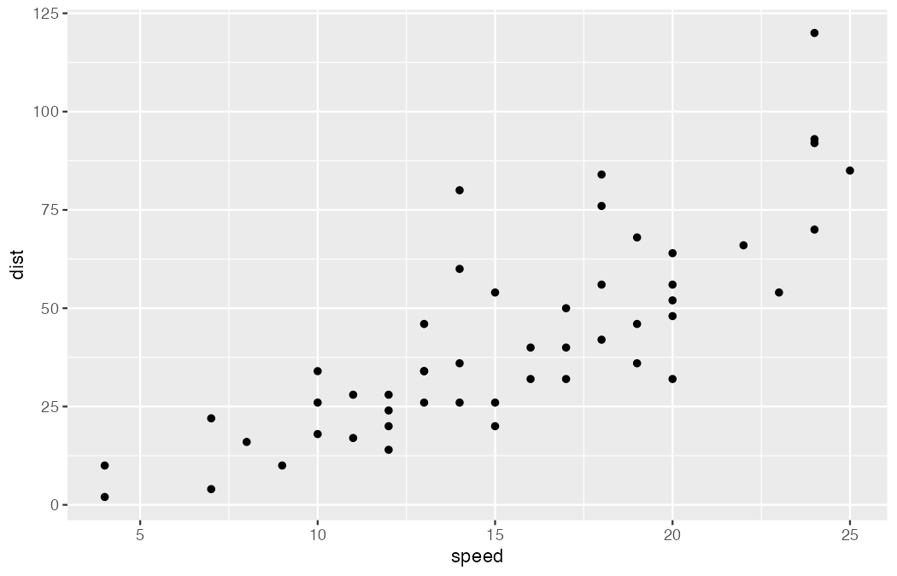
코드 한 줄씩 읽기
library(ggplot2): 패키지를 불러옵니다.library(tidyverse)를 실행해도 ggplot2가 함께 불러와집니다.ggplot(…): 그림을 그릴 판을 만듭니다. 인수가 여럿이므로 인수마다 한 줄씩 적었습니다. 여는 괄호부터 닫는 괄호까지만 실행하면 아무것도 없는 회색 판이 나옵니다.data = cars: 그릴 데이터를 정합니다.mapping = aes(…): 미적 매핑. 안쪽의x = speed,y = dist처럼 인수마다 한 줄씩, 어느 열을 어느 위치에 놓을지 연결합니다. 축의 범위와 눈금은 척도가 이 매핑을 보고 정합니다.) +: 닫는 괄호 뒤의+가 레이어나 설정을 더합니다. 줄 끝에 둡니다. 다음 줄 맨 앞에 두면 R은 앞 줄에서 명령이 끝났다고 보고, 뒤의+ geom_point()를 따로 실행하다 오류를 냅니다.geom_point(): 기하 객체. 행 하나를 점 하나로 그립니다. 인수를 주지 않았으므로 점의 색·크기·모양도 기본값(검정, 크기 1.5, 모양 19의 채운 원)입니다. ggplot2 4.0부터 이 값은 테마가 정합니다.
적지 않은 구성요소는 기본값이 채운다
코드에는 세 가지만 적었지만 그림에는 02절에서 볼 구성요소가 모두 들어 있습니다. 적지 않은 것은 ggplot2가 아래 기본값으로 채웁니다.
| 구성요소 | 이 코드에서 | 적지 않았을 때의 기본값 | 그림에서 보이는 곳 |
|---|---|---|---|
| data | cars | — | 점 50개. 행 하나가 자동차 한 대 |
| aes | x = speed, y = dist | 색·크기·모양은 매핑하지 않음 | 점의 좌표(위치) |
| geom | geom_point() | — | 검은 점 |
| stat | 적지 않음 | "identity": 값을 계산 없이 그대로 씀 | 점 하나 = 행 하나 |
| position | 적지 않음 | "identity": 겹쳐도 옮기지 않음 | 속도 13, 거리 34인 차가 두 대라 점 하나로 겹쳐 보임 |
| scale | 적지 않음 | scale_x_continuous(), scale_y_continuous(): 자료의 최솟값~최댓값에 양쪽 5% 여유 | x축 눈금 5~25, y축 눈금 0~125 |
| coord | 적지 않음 | coord_cartesian(): 직교 좌표 | 가로·세로 축이 직각인 평면 |
| facet | 적지 않음 | facet_null(): 패널 하나 | 나뉘지 않은 한 장 |
| guide | 적지 않음 | 색 등을 매핑하지 않았으므로 범례 없음 | 축 눈금과 숫자만 |
| labs | 적지 않음 | 매핑한 열 이름 | 축 제목 speed, dist. 그림 제목은 없음 |
| theme | 적지 않음 | theme_grey(): 글자 11pt | 회색 패널, 흰 격자선 |
기본값을 모두 적으면 아래 코드가 됩니다. 두 코드는 같은 그림을 그립니다(위와 같은 크기로 저장한 PNG 파일이 바이트까지 같습니다). 단, theme_set()으로 기본 테마를 바꿔 두었다면 마지막 줄 때문에 결과가 달라집니다.
코딩 에이전트로 사용자화하기
이 자료의 R 코드는 직접 쳐도 되고, 같은 일을 시키는 프롬프트를 코딩 에이전트(VS Code의 Antigravity 등)에 붙여 넣어도 됩니다. 에이전트가 코드를 쓰고 실행하면, 나는 바뀐 줄이 위 표의 어느 구성요소를 건드렸는지 확인합니다. 프롬프트에는 무엇을 바꿀지(구성요소), 무엇은 그대로 둘지, 결과를 어떻게 보여 줄지를 적습니다. AI에게 묻는 방법은 VS Code에서 R 실행하기에도 있습니다.
실습 내내 지킬 규칙은 프롬프트마다 되풀이하지 않고 작업 폴더 맨 위의 AGENTS.md 파일에 적어 둡니다. Antigravity는 이 파일을 읽어 대화를 새로 시작해도 같은 규칙을 지킵니다. 이 과정의 결과물(그림, PDF, 정리한 자료)은 모두 작업 폴더 맨 위의 output/ 폴더에 모읍니다. 그림은 output/figures/에 둡니다.
작업 폴더는 아래처럼 됩니다. 내가 준비하는 것은 AGENTS.md(아래 상자를 붙여 넣어 저장)와, 03절부터 쓸 내 자료 파일(dataset/raw/)뿐입니다. dataset/은 데이터 준비 자료에서 만든 폴더 그대로이고, 원본은 raw/, 다듬은 자료는 working/에 둡니다. scripts/의 스크립트와 output/의 결과물은 프롬프트를 보내면 에이전트가 만듭니다. 첫 스크립트가 06_cars.R인 것은 데이터 준비·평균검정 자료에서 같은 작업 폴더에 01~05 스크립트를 이미 만들었기 때문입니다. 나머지 스크립트와 그림 파일 이름 앞의 번호는 이 자료의 절 번호입니다.
작업 폴더/ ├── AGENTS.md ← 내가 만든다 (01절, 09절에서 덧붙인다) ├── dataset/ ← 데이터 준비 자료에서 만든 폴더 │ ├── raw/ ← 원본. 내 자료를 넣어 둔다 (03절부터) │ └── working/ ← 다듬은 자료 ├── scripts/ ← 에이전트가 만든다 │ ├── 06_cars.R ← 첫 스크립트, 예제 데이터 cars (01~05는 평균검정 자료) │ ├── 07_base_plot.R ← 07~09절이 함께 쓰는 바탕 그림 p │ ├── theme_project.R ← 09절의 공통 테마 │ └── … ├── output/ │ └── figures/ ← 에이전트가 저장한다 (01_cars.png, 07_base.png, …) └── fonts/ ← 인터넷이 막혔을 때만 (10절)
# 시각화를 위한 규칙 이 폴더에서는 R과 ggplot2로 그림을 그린다. ## 환경 - 시각화는 ggplot2 을 사용하고, 한글 글꼴은 showtext 의 font_add_google() 로 Noto Sans KR 을 등록하고 사용한다. 다른 패키지가 필요하면 먼저 이유를 말하고 내 허락을 받은 뒤 install.packages() 로 설치한다. - R 스크립트는 scripts/ 폴더에 06_cars.R 처럼 번호를 붙여 만들고, 작업 폴더 맨 위에서 터미널로 Rscript 를 써서 실행한다(Windows PowerShell 에서는 Rscript.exe). - 여러 스크립트가 함께 불러 쓰는 파일(바탕 그림, 공통 테마)은 프롬프트가 정한 이름 그대로 둔다(예: scripts/07_base_plot.R, scripts/theme_project.R). - 모든 결과물은 작업 폴더 맨 위의 output/ 폴더에 저장한다. 그림은 ggsave() 로 output/figures/ 폴더에 PNG로 저장한다. 폴더가 없으면 만든다. - 내 자료의 원본은 dataset/raw/ 에 두고 고치지 않는다. 다듬은 자료는 dataset/working/ 에 저장한다. ## 진행 방식 - 내가 시킨 것만 바꾼다. 시키지 않은 구성요소(테마, 색, 축 범위 등)는 기본값이나 지금 상태 그대로 둔다. - 스크립트를 고치면 바뀐 줄을 보여 주고, 다시 실행해 그림을 저장한다. - 새로 쓴 함수마다 그 함수가 그림의 어느 구성요소(data, aes, geom, stat, position, scale, coord, facet, guide, labs, theme)를 바꾸는지 한 줄로 설명한다. - 확실하지 않은 함수나 인수는 지어내지 말고 확실하지 않다고 말한다.
이 규칙은 실습하면서 늘려 갑니다. 09절에서는 프로젝트의 모든 그림이 같은 테마로 나오도록 "그림 모양" 규칙을 덧붙입니다. 파일을 저장했으면 첫 그림부터 시킵니다. 이후 프롬프트는 하나씩, 앞의 결과를 확인한 다음에 보냅니다. 한글 제목은 글꼴 설정(10절)이 필요할 수 있으므로 여기서는 영어로 붙입니다.
프롬프트 0을 보내면 에이전트는 아래와 비슷한 파일을 만들어 실행합니다. 규칙(규칙 확인, 폴더 만들기, output/figures/에 저장)이 코드에 어떻게 나타나는지 봐 두면, 뒤의 프롬프트에서 에이전트가 고친 줄을 읽을 때 기준이 됩니다. 세부 모양은 에이전트마다 조금 다릅니다.
이 폴더의 AGENTS.md 를 읽고, 거기 적힌 규칙을 세 줄로 요약해 줘. 그다음 scripts/06_cars.R 을 만들어 실행해 줘. - R 내장 자료 cars 로 x축에 speed, y축에 dist 를 놓은 산점도를 그린다. - ggplot() 과 geom_point() 만 쓰고, 나머지 구성요소는 모두 기본값으로 둔다. - 그림은 output/figures/01_cars.png 로 저장한다.
scripts/06_cars.R 의 그림에 제목과 축 제목을 붙여 줘. - 제목: Speed and stopping distance - x축: Speed (mph), y축: Stopping distance (ft) - 레이블만 더하고 다른 줄은 고치지 않는다.
scripts/06_cars.R 의 그림에 단순 선형회귀 직선을 더해 줘. 95% 신뢰대는 기본값대로 보이게 둔다. 이 선과 띠가 cars 의 어떤 값을 계산해서 그린 것인지 한 문장으로 설명해 줘.
speed 와 dist 가 똑같은 자동차가 있어 점이 겹친다. 겹친 점이 모두 보이도록 바꿔 줘. 어떤 방법을 썼는지, 그 방법이 그림에 찍히는 점의 위치를 바꾸는지 설명해 줘.
x축 눈금을 5, 10, 15, 20, 25 로 두고, y축은 0에서 시작하게 해 줘. 범위 밖의 자료를 지우는 방법은 쓰지 않는다. 어느 함수를 썼는지 알려 줘.
그림의 테마를 theme_minimal() 로 바꾸고 기본 글자 크기를 14 로 키워 줘. 그다음 output/figures/01_cars_final.png 로 7×4.5인치, 300 dpi 로 다시 저장해 줘.
- 짧은 코드와 기본값을 모두 적은 코드를 차례로 실행해 두 그림이 같은지 확인하세요.
+를 다음 줄 맨 앞으로 옮겨 실행하고, 어떤 메시지가 나오는지 확인하세요.- 프롬프트 1~5를 보낼 때마다 에이전트가 더한 함수가 위 표의 어느 구성요소인지 적어 보세요. 시키지 않은 구성요소를 바꾸지는 않았나요?
ggplot 플롯의 구성요소
01절의 cars 그림은 기본값만 썼습니다. 이제 색, 회귀선, 패널 분할, 제목이 모두 들어간 mtcars 그림 한 장에서 구성요소 전체를 나눠 봅니다. 그 가운데 미적 매핑(aes)과 기하 객체(geom)는 03·04절에서 더 자세히 봅니다. ggplot2는 Wilkinson의 Grammar of Graphics를 Wickham이 레이어 문법으로 재구성한 것입니다. 그림은 데이터·매핑·기하객체·통계변환으로 이루어진 레이어에 척도·좌표계·패싯·테마가 더해져 완성됩니다. 아래 구성요소를 눌러 그림의 어느 부분을 담당하는지 확인하세요.
- 왼쪽 단추 가운데 통계 변환(
stat_*())을 눌러 보고, 그림에서 강조된 것 가운데 원자료에 없는 요소가 무엇인지 말해 보세요. - 척도(
scale_*())와 가이드(guides())를 차례로 눌러 함께 강조되는 영역을 찾고, 둘의 역할 차이를 한 문장으로 정리하세요. - 자신의 연구 자료로 그릴 그림 하나를 골라 data · aes · geom을 종이에 먼저 적어 보세요.
aes(): 내 데이터를 미적 속성에 연결하기
미적 속성(aesthetics)은 위치(x, y), 색(colour), 채움색(fill), 크기(size), 모양(shape), 투명도(alpha), 선 종류(linetype)처럼 그림에서 눈으로 구별하는 성질입니다. aes()는 데이터의 열을 이 성질에 연결합니다. 같은 colour도 aes() 안에 쓰느냐 밖에 쓰느냐에 따라 뜻이 완전히 달라집니다. 아래 그림은 모두 R(ggplot2 4.0.3)에서 그대로 실행한 결과입니다.
aes() 안과 밖
aes() 안에 쓸 때 | aes() 밖(geom_*()의 인수)에 쓸 때 | |
|---|---|---|
| 무엇을 주나 | 데이터의 열(변수) 이름 | 고정값 하나. 예: "steelblue", 2, 0.5 |
| 점마다 | 그 행의 값에 따라 달라짐 | 모두 같음 |
| 척도와 범례 | 척도가 값을 색·크기로 바꾸고, 범례가 생김 | 척도도 범례도 없음 |
| 쓰는 곳 | ggplot(mapping = aes(…)) 또는 geom_*(aes(…)) | geom_point(colour = "steelblue") |
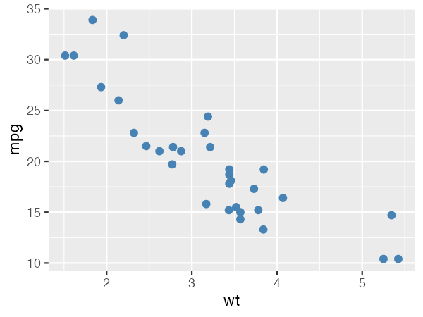
ggplot(
data = mtcars,
mapping = aes(
x = wt,
y = mpg
)
) +
geom_point(colour = "steelblue", size = 2)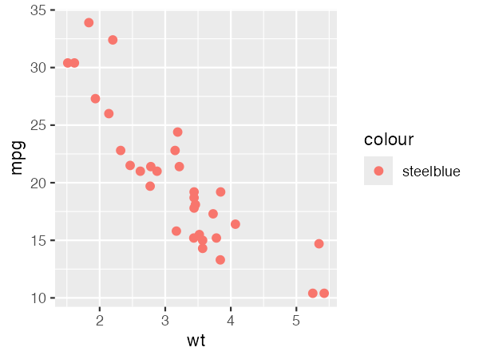
"steelblue"를 aes() 안에 쓰면 값이 "steelblue" 하나뿐인 범주형 변수로 읽힙니다. 점은 기본 팔레트의 첫 색(주황빛 빨강)으로 칠해지고, "steelblue" 항목 하나짜리 범례가 생깁니다.ggplot(
data = mtcars,
mapping = aes(
x = wt,
y = mpg,
colour = "steelblue"
)
) +
geom_point(size = 2)반대 실수도 있습니다. 열 이름을 aes() 밖에 쓰면(geom_point(colour = cyl)) R은 데이터 안이 아니라 작업 공간에서 cyl이라는 객체를 찾다가 object 'cyl' not found 오류를 냅니다. 열 이름은 aes() 안에, 고정값은 aes() 밖에 둡니다.
변수의 종류가 척도를 정한다
같은 열이라도 R이 숫자로 아는지 범주로 아는지에 따라 척도와 범례가 달라집니다. mtcars의 cyl(실린더 수)은 4, 6, 8 세 값뿐인 범주지만 숫자로 저장되어 있어서, 그대로 넣으면 연속형 색 띠가 생기고 5나 7처럼 없는 값까지 눈금에 나옵니다. factor(cyl)로 바꾸면 구별되는 세 색이 됩니다.
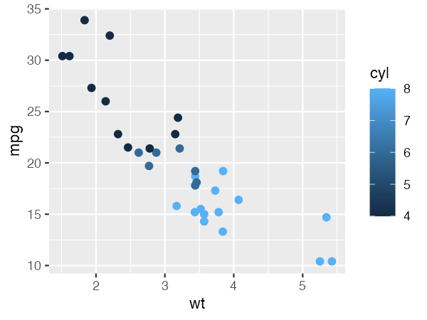
ggplot(
data = mtcars,
mapping = aes(
x = wt,
y = mpg,
colour = cyl
)
) +
geom_point(size = 2)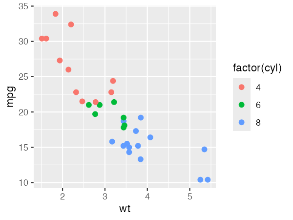
ggplot(
data = mtcars,
mapping = aes(
x = wt,
y = mpg,
colour = factor(cyl)
)
) +
geom_point(size = 2)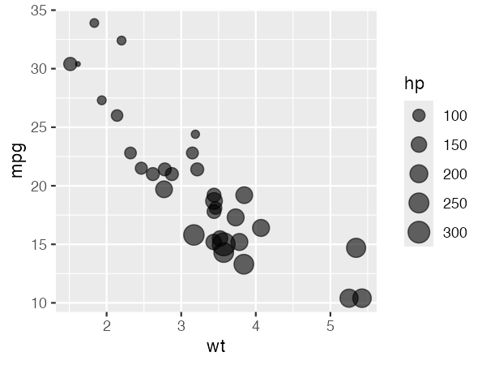
ggplot(
data = mtcars,
mapping = aes(
x = wt,
y = mpg,
size = hp
)
) +
geom_point(alpha = 0.6)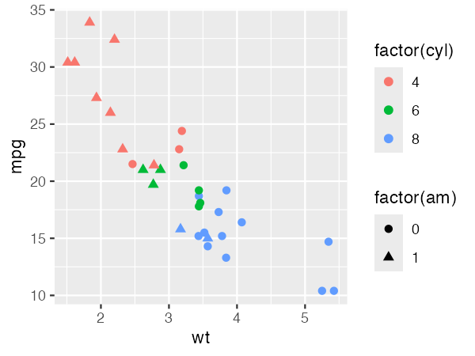
ggplot(
data = mtcars,
mapping = aes(
x = wt,
y = mpg,
colour = factor(cyl),
shape = factor(am)
)
) +
geom_point(size = 2)| 미적 속성 | 연속형(숫자) | 범주형 | 메모 |
|---|---|---|---|
| x, y | ○ | ○ | 가장 잘 읽히는 속성. 가장 중요한 비교를 여기에 둔다 |
| colour, fill | 색 띠(그라데이션) | 구별되는 색 | colour는 점·선의 색, fill은 막대·상자의 안쪽 색 |
| size | ○ | 권하지 않음 | 범주형을 넣으면 "Using size for a discrete variable is not advised." 경고 |
| alpha | ○ | 권하지 않음 | 겹친 점을 보이게 할 때는 aes() 밖에 고정값으로 많이 쓴다 |
| shape | 쓸 수 없음 | ○ (여섯 가지 안팎까지) | 연속형을 넣으면 "A continuous variable cannot be mapped to the shape aesthetic." 오류 |
| linetype | 쓸 수 없음 | ○ | 선을 그리는 geom에서 쓴다. 연속형은 shape와 같은 오류 |
| label | 글자로 쓸 열 | geom_text(), geom_label()이 그리는 글자 | |
| group | — | ○ | 색을 나누지 않고 선·회귀선만 묶음별로 나눌 때 |
전체 매핑과 레이어 매핑
ggplot()의 mapping에 쓴 aes()는 뒤에 오는 모든 레이어가 물려받습니다. 한 레이어에만 쓰려면 그 geom_*() 안에 aes()를 둡니다. 아래 두 그림은 색 매핑을 둔 자리만 다르고, 회귀선의 수가 달라집니다.
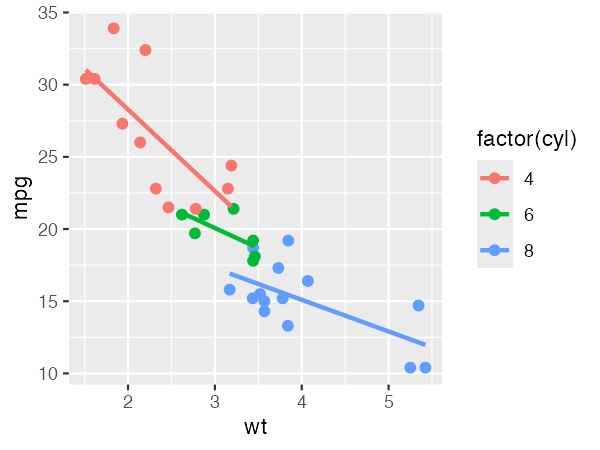
ggplot(
data = mtcars,
mapping = aes(
x = wt,
y = mpg,
colour = factor(cyl)
)
) +
geom_point(size = 2) +
geom_smooth(method = "lm", se = FALSE)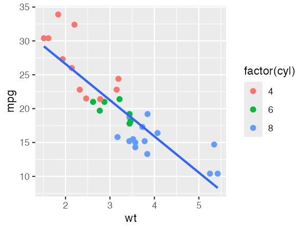
ggplot(
data = mtcars,
mapping = aes(
x = wt,
y = mpg
)
) +
geom_point(aes(colour = factor(cyl)), size = 2) +
geom_smooth(method = "lm", se = FALSE)내 데이터에 적용하기
- 열을 살펴본다.
str()로 열 이름과 자료형을 보고, 열마다 서로 다른 값이 몇 개인지 확인합니다. - 연속형과 범주형을 가른다. 학년(1, 2, 3), 성별 코드(0, 1), 지역 번호처럼 숫자로 적힌 범주는
factor()로 바꿔야 범주형 척도가 됩니다. - 미적 속성을 고른다. 가장 중요한 비교를 위치(x, y)에, 그다음을 색에 둡니다. 색까지 써도 나눌 것이 남으면 모양이나 패널(
facet_wrap())을 씁니다. 한 그림에 미적 속성을 너무 많이 쓰면 오히려 읽기 어렵습니다. - 고정값은 밖에 둔다. 점 크기, 투명도처럼 모든 점에 같게 줄 값은
geom_*()의 인수로 적습니다. - 범례 제목을 고친다. 범례 제목은 매핑한 식(
factor(cyl))이 그대로 나오므로labs(colour = "실린더")처럼 미적 속성 이름으로 바꿉니다.
dataset/raw/ 폴더에 넣어 둔 내 자료 파일(예: dataset/raw/mydata.csv)을 읽는 스크립트 scripts/03_mydata.R 을 만들어 실행해 줘. - 열 이름, 자료형, 서로 다른 값의 개수를 표로 보여 준다. - 각 열이 연속형인지 범주형인지 판단하고, 숫자로 적혀 있지만 범주인 열이 있으면 따로 알려 준다. - 그림은 아직 그리지 않는다.
scripts/03_mydata.R 에 이어서, 앞에서 살펴본 내 자료로 산점도를 그려 줘. - [열1] 은 x, [열2] 는 y, [열3] 은 색(colour)으로 연결한다. - [열3] 이 숫자로 적힌 범주라면 factor() 로 바꾼다. - 점 크기 같은 고정값은 aes() 밖에 둔다. - 범례 제목은 [열3] 의 뜻을 알 수 있는 이름으로 바꾼다. - 각 미적 속성이 aes() 안인지 밖인지, 그래서 범례가 생기는지 한 줄씩 설명해 줘. - 그림은 output/figures/03_mydata.png 로 저장한다.
- "aes() 안: 자주 하는 실수" 코드에서
colour = "steelblue"를geom_point()안으로 옮겨 실행하고, 범례가 어떻게 바뀌는지 확인하세요. colour = cyl과colour = factor(cyl)의 범례를 비교하고, 내 자료에서 숫자로 적힌 범주 열을 하나 찾아 보세요.shape = hp로 실행해 어떤 메시지가 나오는지 읽고, 메시지가 권하는 대안을 적어 보세요.
geom_*(): 그림 요소 더하기
geom_*()은 데이터를 무엇으로 그릴지 정합니다. 점, 선, 막대, 상자처럼 그리는 모양마다 함수가 있고, 레이어 하나에 geom 하나가 들어갑니다. +로 더한 레이어는 앞의 레이어 위에 그려집니다. 어떤 geom을 쓸지는 무엇을 보여 주려는지와 변수의 종류로 정합니다. 아래 그림은 모두 R에서 그대로 실행한 결과입니다.
| 보여 줄 것 | geom | 꼭 주어야 할 미적 속성 | 함께 쓰는 stat |
|---|---|---|---|
| 연속형 한 변수의 분포 | geom_histogram(), geom_density() | x | bin, density: 개수·밀도(y)를 계산 |
| 범주별 개수 | geom_bar() | x | count: 행의 수(y)를 셈 |
| 범주별로 이미 계산한 값 | geom_col() | x, y | identity: y 값을 그대로 |
| 범주별 분포 비교 | geom_boxplot(), geom_violin() | x(범주), y | boxplot, ydensity |
| 두 연속형 변수의 관계 | geom_point(), geom_jitter() | x, y | identity |
| 추세 | geom_smooth() | x, y | smooth: 회귀선과 신뢰대를 계산 |
| 시간에 따른 변화 | geom_line() | x, y | identity: x 순서대로 이음 |
| 글자 주석 | geom_text(), geom_label() | x, y, label | identity |
| 기준선 | geom_hline(), geom_vline(), geom_abline() | yintercept, xintercept, slope·intercept (보통 aes() 밖의 고정값) | — |
꼭 주어야 할 미적 속성이 빠지면 그림이 그려지지 않습니다. 예를 들어 aes(x = mpg)만 주고 geom_point()를 더하면 `geom_point()` requires the following missing aesthetics: y. 오류가 납니다. 히스토그램과 막대그래프는 stat이 y를 계산하므로 x만 주면 됩니다.
한 변수의 분포
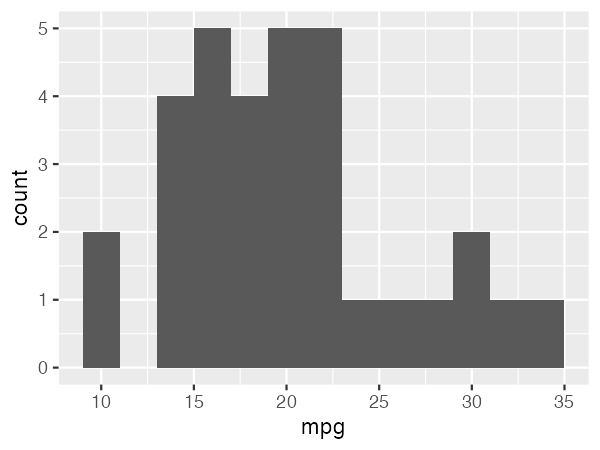
binwidth에 따라 모양이 크게 달라집니다.ggplot( data = mtcars, mapping = aes(x = mpg) ) + geom_histogram(binwidth = 2)
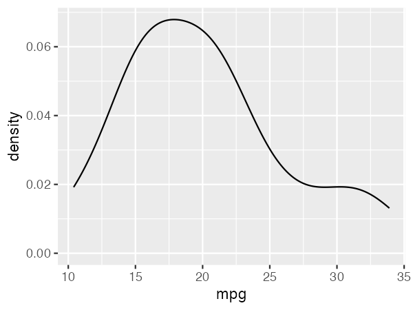
ggplot( data = mtcars, mapping = aes(x = mpg) ) + geom_density()
범주별 개수와 값: geom_bar()와 geom_col()
둘 다 막대를 그리지만 막대 높이를 정하는 방법이 다릅니다. geom_bar()는 행의 수를 세어 높이로 쓰고, geom_col()은 y에 준 값을 그대로 씁니다. geom_bar()에 y까지 주면 `stat_count()` must only have an x or y aesthetic. 오류가 납니다.
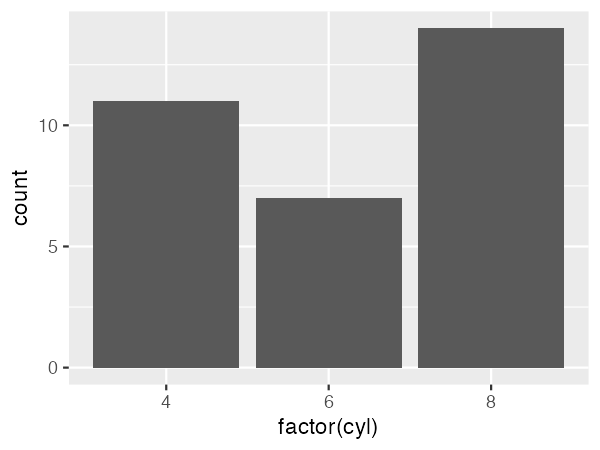
ggplot( data = mtcars, mapping = aes(x = factor(cyl)) ) + geom_bar()
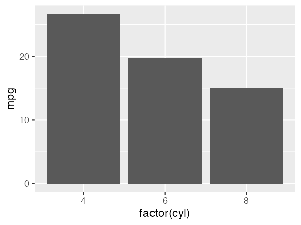
group_by()와 summarise()로 실린더별 평균 연비를 구하고, 그 값을 막대 높이로 씁니다. 두 함수는 library(tidyverse)로 함께 불러오는 dplyr의 것입니다.mpg_by_cyl <- mtcars %>%
group_by(cyl) %>%
summarise(mpg = mean(mpg))
ggplot(
data = mpg_by_cyl,
mapping = aes(
x = factor(cyl),
y = mpg
)
) +
geom_col()범주별 분포 비교와 레이어 쌓기
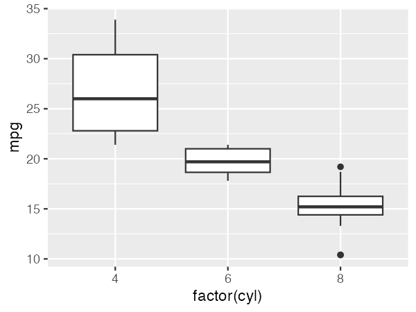
ggplot(
data = mtcars,
mapping = aes(
x = factor(cyl),
y = mpg
)
) +
geom_boxplot()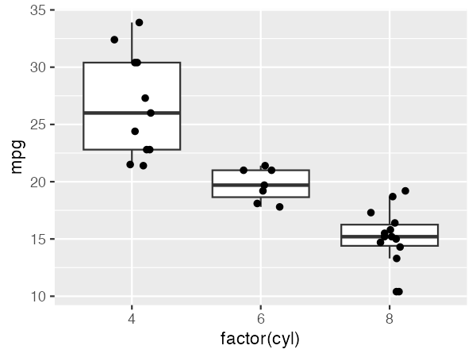
height = 0), 같은 차가 두 번 그려지지 않게 상자그림의 이상값 점은 숨깁니다(outlier.shape = NA).ggplot(
data = mtcars,
mapping = aes(
x = factor(cyl),
y = mpg
)
) +
geom_boxplot(outlier.shape = NA) +
geom_jitter(width = 0.15, height = 0)두 변수의 관계, 시간, 주석
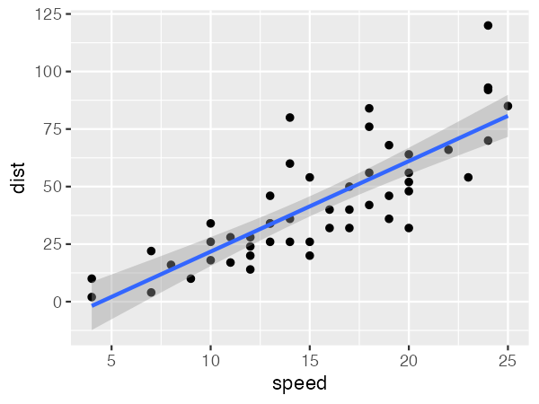
ggplot(
data = cars,
mapping = aes(
x = speed,
y = dist
)
) +
geom_point() +
geom_smooth(method = "lm")
economics(1967~2015년 월별)의 실업자 수(천 명)입니다. x 순서대로 점을 잇습니다.ggplot(
data = economics,
mapping = aes(
x = date,
y = unemploy
)
) +
geom_line()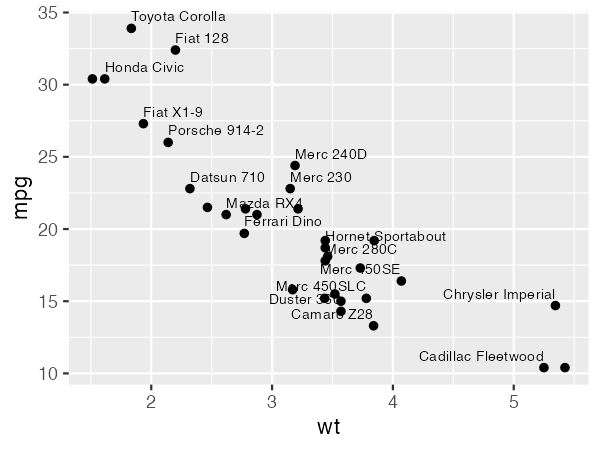
rownames_to_column()으로 열로 만든 뒤 label로 매핑했습니다. check_overlap = TRUE는 겹치는 글자를 빼고, hjust = "inward"는 가장자리 글자를 안쪽으로 붙입니다.mtcars2 <- mtcars %>%
rownames_to_column("model")
ggplot(
data = mtcars2,
mapping = aes(
x = wt,
y = mpg,
label = model
)
) +
geom_point() +
geom_text(size = 2.5, vjust = -0.7, hjust = "inward", check_overlap = TRUE)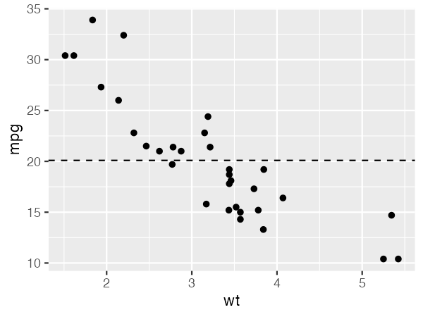
yintercept는 고정값이므로 aes() 밖에 씁니다.ggplot(
data = mtcars,
mapping = aes(
x = wt,
y = mpg
)
) +
geom_point() +
geom_hline(yintercept = mean(mtcars$mpg), linetype = "dashed")scripts/03_mydata.R 에서 읽은 내 자료에서 [열1](범주형)에 따라 [열2](연속형)가 어떻게 다른지 보여 주고 싶다. - 어울리는 geom 후보를 세 가지 들고, 각각이 무엇을 잘 보여 주고 무엇을 감추는지 한 줄씩 설명해 줘. - 내가 고를 때까지 그림은 그리지 않는다.
scripts/04_box_points.R 을 만들어, 내 자료의 [열1] 별 [열2] 상자그림 위에 관측값 하나하나를 점으로 겹쳐 그려 줘. 앞에서 다른 geom 을 골랐더라도 이 실습은 상자그림으로 한다. - 점이 겹치지 않게 가로 방향으로만 조금 흩뜨린다. 세로 위치(값)는 바꾸지 않는다. - 같은 관측값이 두 번 그려지지 않게 상자그림의 이상값 점은 숨긴다. - 더한 레이어의 순서와, 순서를 바꾸면 무엇이 달라지는지 설명해 줘. - 그림은 output/figures/04_box_points.png 로 저장한다.
- 히스토그램의
binwidth를 1과 5로 바꿔 그리고, 분포의 모양이 어떻게 달라 보이는지 비교하세요. geom_bar()그림에y = mpg를 더해 실행하고, 나오는 메시지와geom_col()을 써야 하는 까닭을 연결해 보세요.- "상자 + 점" 코드에서 두 geom의 순서를 바꾸면 무엇이 달라지는지 확인하세요.
구성요소를 ggplot에서 지정하는 방법
각 구성요소에는 이름 규칙이 정해진 함수군이 대응합니다. 함수는 +로 쌓이고, 나중에 더한 같은 종류의 설정이 앞선 것을 덮어씁니다.
| 구성요소 | 함수 패턴 | 예시 | 메모 |
|---|---|---|---|
| data | ggplot(data), geom_*(data =) | ggplot(mtcars) | 레이어마다 다른 데이터를 줄 수 있음 |
| aes | aes() 전역 / 레이어별 | aes(colour = factor(cyl)) | 고정값은 aes 밖에: geom_point(colour = "red") |
| geom | geom_*() | geom_point(size = 2) | 레이어 하나 = geom 하나 |
| stat | stat_*(), geom_*(stat =) | stat_summary(fun = mean) | geom_bar는 stat_count, geom_smooth는 stat_smooth |
| position | position_*() | geom_bar(position = "dodge") | 겹침 조정: stack, dodge, jitter |
| scale | scale_<aes>_<type>() | scale_colour_brewer(), scale_y_log10(), scale_y_continuous(labels = scales::label_comma()) | limits는 범위 밖 데이터를 제거함. 눈금 글자는 labels로(아래 예) |
| coord | coord_*() | coord_cartesian(ylim = c(10, 30)) | 데이터는 두고 화면만 확대 |
| facet | facet_wrap(), facet_grid() | facet_wrap(~ am) | scales = "free_y"로 축 독립 |
| guide | guides(), guide_*() | guides(colour = guide_legend(nrow = 1)) | 범례·축의 모양 |
| labs | labs() | labs(title = "…", x = "…") | aes 이름으로 범례 제목 지정 |
| theme | theme_*() + theme() | theme(legend.position = "bottom") | 07~09절에서 자세히 |
축 눈금 글자 바꾸기: 세 자리 쉼표
축은 척도(scale_x_*(), scale_y_*())가 만든다. 눈금의 위치는 breaks, 눈금에 적는 글자는 labels 인수다. labels에는 글자 벡터를 직접 줄 수도 있지만, 보통은 숫자를 글자로 바꾸는 함수를 준다. ggplot2와 함께 설치되는 scales 패키지에 그런 함수가 모여 있다. 1,000이 넘는 값에 세 자리 쉼표를 넣는 scales::label_comma()가 대표적이다. 04절의 실업자 수 자료로 비교한다.
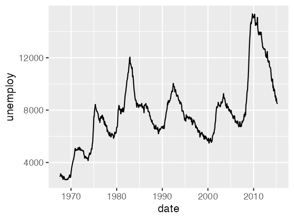
ggplot(
data = economics,
mapping = aes(
x = date,
y = unemploy
)
) +
geom_line()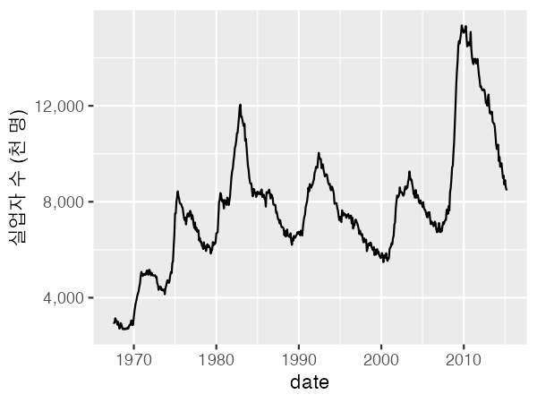
labs()로 단위도 적었다.ggplot(
data = economics,
mapping = aes(
x = date,
y = unemploy
)
) +
geom_line() +
scale_y_continuous(labels = scales::label_comma()) +
labs(y = "실업자 수 (천 명)")| 눈금 글자 | labels = | 예 |
|---|---|---|
| 세 자리 쉼표 | scales::label_comma() | 12,000 |
| 백분율 | scales::label_percent() | 0.25 → 25% |
| 통화 | scales::label_currency(prefix = "₩") | ₩12,000 |
| 단위 붙이기 | scales::label_number(suffix = " mg") | 3,000 mg (쉼표는 big.mark = ",") |
| 날짜 형식 | scales::label_date("%Y년") | 1970년 (x축이 날짜일 때) |
04절의 실업자 수 선그래프(scripts/04_box_points.R 과 같은 폴더에 scripts/05_axis.R 로 만든다)에서 y축 눈금 글자를 고쳐 줘. - 1,000 이 넘는 값에 세 자리 쉼표를 넣는다. 데이터나 눈금 위치는 바꾸지 않고 글자만 바꾼다. - y축 제목에 단위(천 명)를 적는다. - 어느 구성요소(scale, labs)의 어느 인수를 썼는지 설명하고, 그림은 output/figures/05_axis_comma.png 로 저장한다.
레이어를 하나씩 쌓아 보기
geom_smooth()를 켠 상태에서colour매핑을 끄고 켜 보세요. 회귀선 개수가 왜 바뀌나요?coord_cartesian(ylim = c(10, 30))대신scale_y_continuous(limits = c(10, 30))를 쓰면 회귀선이 어떻게 달라질지 R에서 확인하세요.
그림 객체: ggplot()의 결과를 변수에 담기
지금까지는 ggplot()부터 마지막 geom_*()까지 한 번에 실행해 바로 그림을 보았습니다. 사실 ggplot()은 그림을 그리는 함수가 아니라 그림 객체(ggplot 객체)를 만드는 함수입니다. 데이터, 매핑, 레이어, 테마 설정이 모두 이 객체 하나에 담기고, 그림은 이 객체를 출력할 때 그려집니다. 그래서 결과를 변수에 담아 두면 같은 그림을 다시 그리고, 저장하고, 요소를 더해 다른 그림을 만드는 데 쓸 수 있습니다. 07절부터 나오는 p가 바로 이 변수입니다.
그림 객체로 할 수 있는 일
| 할 일 | 코드 | 메모 |
|---|---|---|
| 만들기 | p <- ggplot(…) + geom_point() | 변수에 담으면 그림이 그려지지 않습니다. 객체만 만들어집니다 |
| 출력하기 | p 또는 print(p) | 콘솔에서 한 줄씩 실행할 때는 이름만 적어도 그려집니다. 함수나 반복문 안, source()로 실행할 때는 print(p)를 적어야 그려집니다 |
| 저장하기 | ggsave("output/figures/06_p.png", plot = p) | plot을 빼면 마지막으로 만든 그림(last_plot())이 저장되므로, 저장할 그림을 꼭 적습니다 |
| 기본 그림에 요소 더하기 | p_line <- p + geom_smooth(method = "lm") | p는 그대로 두고 새 객체가 생깁니다. 같은 바탕 위에 여러 버전을 만들 때 씁니다 |
| 바꿔 두기 | p <- p + labs(x = "Speed (mph)") | p 자체를 바꾸려면 결과를 다시 p에 담습니다 |
| 무엇인지 확인하기 | class(p) | ggplot2 4.0에서는 "ggplot2::ggplot" 등이 나옵니다 |
p + geom_smooth()만 실행하면 p는 바뀌지 않습니다. 그림에는 회귀선이 보이지만 그것은 새로 만들어 바로 출력한 객체이고, p에는 여전히 점만 있습니다. 회귀선을 남기려면 p_line <- p + geom_smooth()처럼 새 변수에 담거나 p <- …로 다시 담습니다.
스크립트를 Rscript로 실행할 때 맨 바깥에 p만 적어 두면 화면에 그림 창이 뜨지 않고 작업 폴더에 Rplots.pdf가 생깁니다. 그림은 ggsave()로 output/에 저장합니다.
scripts/06_objects.R 을 만들어 실행해 줘. - cars 로 x = speed, y = dist 인 산점도를 그림 객체 p 에 담는다. - p 에 단순 선형회귀 직선을 더한 그림은 p_line, p_line 에 제목을 더한 그림은 p_title 에 담는다. p 는 바꾸지 않는다. - 세 그림을 ggsave() 의 plot 인수로 하나씩 지정해 output/figures/06_p.png, 06_p_line.png, 06_p_title.png 로 저장한다. - 각 객체에 레이어가 몇 개 들어 있는지 출력해 p 가 바뀌지 않았음을 보여 줘.
p + geom_smooth(method = "lm")를 실행한 뒤p를 다시 출력해, 회귀선이 남아 있는지 확인하세요.for (i in 1:3) p와for (i in 1:3) print(p)를 차례로 실행해 무엇이 다른지 확인하세요.ggsave()에서plot =을 빼고 저장한 뒤, 어떤 그림이 저장되었는지 열어 보세요.
theme()의 구성
theme은 데이터와 무관한 모든 잉크를 다룹니다. 설정 하나는 요소 이름 = 요소 함수 형태이고, 요소 이름은 점(.)으로 계층을 이룹니다. 하위 요소는 지정하지 않은 속성을 상위 요소에서 상속합니다.
테마는 프롬프트로 주문하고, 결과는 요소 이름으로 확인합니다. 테마에는 바꿀 수 있는 요소가 많아서 함수와 인수를 외워 코드로 쓰기보다 원하는 모양을 말로 주문하는 편이 쉽습니다. 다만 에이전트가 무엇을 바꿨는지 읽을 수 있어야 결과를 확인하고 다시 고칠 수 있습니다. 그래서 07~09절은 요소의 구조를 본 다음, 프롬프트로 바꾸고, 저장한 그림과 바뀐 줄을 확인하는 순서로 진행합니다. 프롬프트마다 붙은 "확인할 것"을 보며 결과를 직접 점검하세요.
요소 함수 네 가지와 보조 함수
글자: 제목, 축 눈금 레이블, 범례 텍스트, strip
선: 격자, 축선, 눈금
사각형: 배경, 테두리, 범례 키, strip 배경
그리지 않음. 공간도 차지하지 않습니다.
상대 크기, 여백, 길이 단위
margin(t, r, b, l, unit = "pt")
unit(1, "cm")
레이어 기본값(잉크·종이·강조색, 선 굵기, 글꼴)을 테마에서 지정
요소 상속 트리
요소를 누르면 그림에서 해당 부분과 그 요소에서 상속받는 하위 요소가 함께 강조됩니다. 트리는 ggplot2 4.0 기준입니다.
요소가 아닌 설정
모든 theme 인수가 요소 함수를 받는 것은 아닙니다. 위치·방향은 문자열, 간격은 unit(), 비율은 숫자를 받습니다.
legend.position | "right", "bottom", "top", "left", "none", "inside" |
legend.position.inside | c(0.9, 0.9) — 3.5.0부터 inside와 함께 |
plot.title.position | "panel"(기본) 또는 "plot" |
panel.spacing | unit(1, "lines") |
plot.margin | margin(10, 10, 10, 10) |
aspect.ratio | 1 |
테마를 적용하는 세 가지 범위
ggplot2 4.0(2025-09)부터 완성 테마가 ink, paper, accent 인수를 받고, palette.colour.discrete처럼 팔레트도 테마에서 지정할 수 있습니다. theme_sub_legend() 같은 theme_sub_*() 단축 함수도 추가되었습니다.
프롬프트로 테마 요소 고치기
먼저 07~09절에서 함께 쓸 바탕 그림을 그림 객체 p로 만듭니다(06절). p는 그것을 만든 스크립트 안에만 있으므로, 만드는 코드를 scripts/07_base_plot.R 한 파일에 두고 다른 스크립트는 이 파일을 source()로 불러 씁니다. 07절의 나머지 프롬프트는 scripts/07_theme.R에 이어서 보냅니다.
바탕 그림을 만드는 파일과 그것을 쓰는 스크립트를 만들어 실행해 줘.
- scripts/07_base_plot.R 에는 그림 객체 p 를 만드는 코드만 둔다: mtcars 로 x = wt, y = mpg 이고, 실린더 수 factor(cyl) 를 색으로 구분한 산점도. 제목은 Weight and fuel economy, 범례 제목은 Cylinders. 테마는 바꾸지 않는다(기본값).
- scripts/07_theme.R 은 source("scripts/07_base_plot.R") 로 p 를 불러와 output/figures/07_base.png 로 저장한다.p 의 테마를 두 가지만 고쳐 줘. - 보조 격자선(주 격자선 사이의 가는 선)만 지운다. 주 격자선은 남긴다. - 축 제목을 진한 회색으로 바꾼다. - 바꾼 설정마다 theme() 의 어느 요소인지, 그 요소가 어느 상위 요소에서 상속받는지 알려 줘. - 결과를 output/figures/07_elements.png 로 저장한다.
| 확인할 것 | 어떻게 확인하나 |
|---|---|
| 보조 격자선 | 07_base.png와 비교해 주 격자선 사이의 가는 흰 선만 사라졌는가. 굵은 주 격자선은 남아 있는가 |
| 바뀐 요소 | 에이전트가 쓴 요소가 위 트리의 panel.grid.minor, axis.title인가. 다른 요소(예: panel.grid 전체)를 지우지 않았는가 |
| 상속 설명 | panel.grid.minor → panel.grid → line, axis.title → title → text처럼 트리와 같은 순서로 설명했는가 |
p 의 모든 글자(제목, 축 제목, 눈금 글자, 범례)를 한 번에 조금 키우고 싶다. - 요소마다 따로 고치지 말고, 모든 글자가 물려받는 상위 요소 하나만 바꾼다. - 어느 요소를 바꿨는지, 그래서 어떤 하위 요소들이 함께 커지는지 알려 줘. - 결과를 output/figures/07_text_size.png 로 저장한다.
지금까지 고친 테마를 이 스크립트의 모든 그림에 기본으로 적용하고 싶다. - 그림마다 + theme() 을 붙이지 않고, 기본 테마를 한 번만 바꾸는 방법을 쓴다. - 그 방법으로 mtcars 의 hp 와 mpg 산점도를 하나 더 그려 output/figures/07_default_theme.png 로 저장하고, 새 그림에도 같은 테마가 적용됐는지 보여 줘.
| 확인할 것 | 어떻게 확인하나 |
|---|---|
| 한꺼번에 커졌는가 | 07_text_size.png에서 제목, 축 제목, 눈금 글자, 범례 글자가 모두 함께 커졌는가. 서로의 크기 비율은 그대로인가 |
| 바꾼 요소 | text 요소 하나(또는 바탕 테마의 base_size)만 바꿨는가. axis.text, plot.title 등을 하나씩 고쳤다면 프롬프트를 어긴 것이다 |
| 기본 테마 | theme_set()이나 theme_update()를 썼는가. 새 그림 07_default_theme.png에 그림마다 + theme()을 붙이지 않았는데도 같은 모양이 나오는가 |
theme_grey()에서axis.line을 눌러 보세요. 왜 아무것도 강조되지 않나요?theme_classic()으로 바꿔 비교하세요.text노드를 누르고,theme(text = element_text(family = "Noto Sans KR"))한 줄이 어디까지 영향을 주는지 설명하세요.
내장 테마와 잘 알려진 테마 패키지
완성 테마(complete theme)는 모든 요소를 한 번에 정의합니다. ggplot2 내장 테마 8종과 주요 확장 패키지의 대표 테마를 같은 그림에 적용해 비교합니다. 브라우저 재현은 배경·격자·축·글꼴의 근사치이며, 실제 출력은 R에서 확인하세요.
프롬프트로 테마 고르기
위젯으로 모양을 훑어보았다면, 실제 그림을 용도에 맞게 비교하는 일은 에이전트에게 맡깁니다.
학술지 투고용 그림에 어울리는 테마를 고르고 싶다.
- scripts/08_compare.R 을 만들고, source("scripts/07_base_plot.R") 로 불러온 p 를 theme_bw(), theme_classic(), theme_minimal() 로 각각 바꿔 output/figures/08_bw.png, 08_classic.png, 08_minimal.png 로 저장한다.
- 세 테마가 배경, 격자, 축선, 테두리에서 어떻게 다른지 표로 정리해 줘.
- 흑백으로 인쇄했을 때 가장 읽기 쉬운 것을 하나 추천하고 이유를 말해 줘. 고르는 것은 내가 한다.| 확인할 것 | 어떻게 확인하나 |
|---|---|
| 세 파일 | output/figures/에 08_bw.png, 08_classic.png, 08_minimal.png가 모두 생겼는가. 데이터와 색은 같고 테마만 다른가 |
| 차이 표 | 표에 적힌 차이(예: theme_classic은 격자가 없고 축선만 있다)가 세 그림에서 실제로 보이는가. 위 위젯의 같은 테마와도 비교한다 |
| 추천의 근거 | 추천 이유가 그림에서 확인할 수 있는 것(격자, 배경색, 테두리)에 근거하는가 |
- 학술지 투고용, 발표 슬라이드용, 보고서용으로 각각 어울리는 테마를 하나씩 고르고 이유를 적어 보세요.
- 고른 테마에 글자 크기와 글꼴(대부분
base_size,base_family)을 지정해 같은 그림을 다시 저장하세요.
theme 사용자화
완성 테마를 바탕으로 고치고 싶은 요소만 theme()으로 덮어쓰는 것이 기본 흐름입니다. 자주 쓰는 조합은 함수로 만들어 프로젝트 전체에 적용합니다.
테마 편집기
나만의 테마 함수 만들기
프로젝트에서 반복할 설정을 함수로 묶고 theme_set()으로 기본값을 바꿉니다. 인수로 base_size, base_family를 열어 두면 학술지·슬라이드별로 크기만 바꿔 재사용할 수 있습니다.
+와 %+replace%의 차이
+ theme()은 지정한 속성만 기존 요소에 병합합니다. %+replace%는 요소를 통째로 교체하므로 지정하지 않은 속성은 비어 있게 되고, 상위 요소의 값을 상속합니다.
완성 테마를 처음부터 정의할 때는 %+replace%가 안전하고, 그림 하나를 다듬을 때는 + theme()이 편합니다.
프롬프트로 테마 주문하기
위 편집기의 프롬프트는 설정 하나하나를 그대로 옮긴 것입니다. 실제로는 함수 이름을 몰라도 원하는 모양과 용도를 말하면 됩니다. 대신 에이전트가 어떤 설정을 골랐는지 목록으로 받아, 그림과 맞춰 확인합니다.
scripts/09_slide.R 을 만들어, source("scripts/07_base_plot.R") 로 불러온 p 를 발표 슬라이드용으로 다듬어 줘.
- 강의실 뒤에서도 읽히게 글자를 크게 한다.
- 배경은 흰색, 격자는 가로선만 옅게 남긴다.
- 범례는 그림 아래로 옮긴다.
- 제목은 굵게 하고 그림 왼쪽 끝에 맞춘다.
- 바꾼 theme() 설정을 목록으로 보여 주고, 결과를 output/figures/09_slide.png 로 저장한다.scripts/09_slide.R 로 만든 09_slide.png 의 제목이 너무 크다. - 다른 설정은 그대로 두고 제목 크기만 조금 줄인다. - scripts/09_slide.R 의 바뀐 줄만 보여 주고, 결과를 output/figures/09_slide_v2.png 로 저장한다.
| 확인할 것 | 어떻게 확인하나 |
|---|---|
| 주문한 네 가지 | 09_slide.png에서 글자 크기, 흰 배경과 가로 격자만 남은 모습, 아래쪽 범례, 굵은 왼쪽 정렬 제목을 하나씩 확인했는가 |
| 설정 목록과 그림 | 에이전트가 보여 준 설정(예: panel.grid.major.x = element_blank(), legend.position = "bottom")이 그림의 변화와 하나씩 맞는가. 목록에는 있는데 그림에 없거나, 그 반대인 것은 없는가 |
| 한 요소만 | 프롬프트 2에서 바뀐 줄이 plot.title의 크기 하나뿐인가. 09_slide.png와 09_slide_v2.png를 나란히 열어 제목 말고 달라진 곳이 없는가 |
scripts/09_slide.R 의 테마 설정(09_slide_v2.png 의 모양)을 다른 그림에도 쓸 수 있게 함수로 만들어 줘. - 이름은 theme_slide() 로 하고 scripts/theme_slide.R 에 저장한다. - 기본 글자 크기를 base_size 인수로 받게 한다. 한글 그림에도 쓰도록 base_family 인수도 둔다. - 다른 스크립트에서 source() 로 불러와 쓰는 예를 보여 주고, base_size 를 18로 준 그림을 output/figures/09_slide_function.png 로 저장한다.
| 확인할 것 | 어떻게 확인하나 |
|---|---|
| 함수 파일 | scripts/theme_slide.R이 생겼고, 그 안에 theme_slide <- function(base_size = …, base_family = …)가 있는가 |
| 인수가 먹히는가 | 09_slide_function.png의 글자가 09_slide_v2.png보다 커졌는가. 나머지 모양(배경, 격자, 범례 위치)은 같은가 |
| 위의 예와 비교 | 바로 위 "나만의 테마 함수 만들기"의 theme_lab()과 구조가 어떻게 같고 다른지 설명할 수 있는가 |
프로젝트의 모든 그림을 같은 모양으로: AGENTS.md에 적어 두기
theme_set()은 그 R 세션 안에서만 기본 테마를 바꿉니다. 스크립트를 새로 만들거나 에이전트와 대화를 새로 시작하면 다시 기본 테마로 돌아갑니다. 프로젝트 폴더의 그림이 모두 같은 모양으로 나오게 하려면 두 가지를 해 둡니다.
- 잘 만든 테마를 파일 하나에 둔다. 앞에서 다듬은 테마를
scripts/theme_project.R의 함수 하나로 만들고(아래는 예입니다. 각자 다듬은 설정으로 바꿉니다), 파일 끝에서theme_set()까지 실행하게 합니다. 그림을 그리는 스크립트는 이 파일을source()로 불러오기만 하면 됩니다.R · scripts/theme_project.R 의 예 - AGENTS.md에 규칙으로 적는다. 에이전트는 AGENTS.md를 대화마다 다시 읽으므로, 여기에 적어 두면 새 스크립트를 만들 때도 같은 테마 파일을 불러 쓰고 그림마다 테마를 따로 붙이지 않습니다. 아래 상자를 복사해 01절에서 만든 AGENTS.md 맨 아래에 직접 붙여 넣습니다(에이전트는 이 쪽을 볼 수 없습니다).
AGENTS.md · 맨 아래에 덧붙이기
## 그림 모양 - 이 폴더의 모든 그림은 같은 테마를 쓴다. 테마는 scripts/theme_project.R 의 theme_project() 하나로 정한다. - 그림을 그리는 스크립트는 맨 위에서 source("scripts/theme_project.R") 를 실행한다. 이 파일이 theme_set(theme_project()) 까지 한다. - 그림마다 theme_*() 나 theme() 을 따로 붙이지 않는다. 그림 하나만 달라야 하면 먼저 이유를 말하고 내 허락을 받는다. - 테마를 바꿔야 하면 scripts/theme_project.R 만 고치고, 바뀐 줄을 보여 준다. - 그림은 ggsave() 로 width = 7, height = 4.5, dpi = 300 으로 저장한다.
한글 그림이라면 10절의 글꼴 설정(font_add_google(), showtext_auto(), showtext_opts(dpi = 300))도 같은 파일에 두고, base_family = "Noto Sans KR"을 기본값으로 바꿉니다. 그러면 글꼴까지 프로젝트 전체에서 같아집니다.
앞에서 만든 theme_slide() 를 이 프로젝트의 모든 그림에 쓸 공통 테마로 바꾸려 한다. - scripts/theme_project.R 에 theme_project(base_size, base_family) 함수를 만든다. 모양은 theme_slide() 와 같게 한다. - 파일 끝에서 theme_set(theme_project()) 를 실행하게 한다. - 다른 스크립트는 고치지 않는다. 만든 파일 전체를 보여 줘.
AGENTS.md 맨 아래에 '그림 모양' 절을 내가 더했다. AGENTS.md 전체를 다시 읽고, 그림 모양 규칙을 세 줄로 요약해 줘. - 지금 scripts/ 에 있는 스크립트 가운데 이 규칙에 어긋나는 것이 있으면 고치지 말고 파일 이름과 어긋나는 점만 알려 줘.
scripts/09_rule_check.R 을 만들어 실행해 줘. - mtcars 로 x = hp, y = mpg, 실린더 수 factor(cyl) 를 색으로 구분한 산점도를 그린다. 제목은 Horsepower and fuel economy 로 단다. - 그림은 output/figures/09_rule_check.png 로 저장한다. - 이 스크립트를 쓸 때 AGENTS.md 의 어느 규칙을 따랐는지 알려 줘.
| 확인할 것 | 어떻게 확인하나 |
|---|---|
| 테마 파일을 불러왔는가 | scripts/09_rule_check.R 맨 위에 source("scripts/theme_project.R")가 있는가. 그림 코드에 theme_minimal()이나 + theme(…)이 따로 붙지 않았는가 |
| 모양이 같은가 | 09_rule_check.png를 09_slide_v2.png와 나란히 열어 글자 크기, 배경, 격자, 범례 위치, 제목 모양이 같은가. 데이터만 다르고 테마는 같아야 한다 |
| 저장 크기 | ggsave()에 width = 7, height = 4.5, dpi = 300이 들어갔는가. 앞의 그림들과 파일의 가로·세로 픽셀이 같은가(2100 × 1350) |
| 새 대화에서도 | 대화를 새로 시작한 뒤에도 에이전트가 따로 말하지 않았는데 위 규칙을 지켰는가. 지키지 않았다면 AGENTS.md가 작업 폴더 맨 위에 있는지, 파일 이름이 대문자인지 확인한다 |
예: APA 양식 그림을 프롬프트로 주문하기
논문에 넣을 그림은 학술지가 정한 양식을 따릅니다. 심리학·교육학·사회과학에서 널리 쓰는 APA 7판은 그림을 이렇게 구성합니다(APA Style: Figures).
| 구성 | APA 7판의 요구 | ggplot에서는 |
|---|---|---|
| 번호 | 그림 위에 굵게: Figure 1 | 그림 이미지 안이 아니라 문서 본문에 쓴다 |
| 제목 | 번호 다음 줄에 기울임꼴, 단어마다 첫 글자를 대문자로(Title Case) | 문서 본문에 쓴다. 그림 안의 labs(title = )은 비운다 |
| 그림 안 글자 | 산세리프 글꼴, 8~14 pt | 저장 폭을 인쇄 폭과 같게 두면 pt가 그대로 인쇄된다. base_size 10~11이면 가장 작은 눈금 글자가 8.0~8.8 pt |
| 범례 | 그림 이미지 안에 두고, Title Case로 쓴다 | labs(colour = "Cylinders"), 항목 이름도 대문자로 시작 |
| 주석 | 필요할 때만 그림 아래에 둔다. Note.로 시작 | 문서 본문에 쓴다 |
흰 배경, 격자 없는 패널, 단위를 적은 축 제목, 흑백 인쇄에서도 구별되는 기호는 APA가 직접 정한 규칙은 아니지만 학술지 그림에서 흔히 요구합니다. 이런 요구는 함수 이름을 몰라도 아래처럼 말로 주문할 수 있습니다. 결과를 받으면 확인할 것 표로 하나씩 점검합니다.
scripts/09_apa.R 을 만들어, source("scripts/07_base_plot.R") 로 불러온 p 를 APA 7판 양식의 논문용 그림으로 다듬어 줘.
- 그림 번호와 제목은 그림 이미지 안에 넣지 않는다. 그림의 제목은 지우고, 본문에 넣을 번호·제목·주석을 output/figures/09_apa_caption.md 에 따로 적는다.
· 번호: **Figure 1** (굵게)
· 제목: 다음 줄에 기울임꼴 Title Case 로, 예: *Fuel Economy by Vehicle Weight and Number of Cylinders*
· 주석: *Note.* 로 시작하고 자료의 출처(R 의 mtcars, 1974 Motor Trend)를 적는다.
- 그림 안 글자는 산세리프 글꼴로 하고, 인쇄했을 때 가장 작은 글자가 8 pt 이상, 가장 큰 글자가 14 pt 이하가 되게 한다. 그림은 본문 폭 6.5인치, 높이 4인치로 저장해 글자 크기가 그대로 인쇄되게 한다.
- 배경은 흰색, 격자는 없애고 x·y 축선만 남긴다.
- 축 제목은 Title Case 로 단위를 적는다: Weight (1,000 lb), Fuel Economy (mpg).
- 범례는 그림 이미지 안에 두고, 범례 제목과 항목을 Title Case 로 쓴다(예: Cylinders, 4 Cylinders).
- 흑백으로 인쇄해도 집단을 구별할 수 있게 색과 함께 점 모양도 실린더 수에 따라 다르게 한다.
- 그림은 output/figures/09_apa.png 로 300 dpi 로 저장한다.
- 바꾼 설정마다 위의 어느 요구에 맞춘 것인지 한 줄씩 설명해 줘.| 확인할 것 | 어떻게 확인하나 |
|---|---|
| 번호와 제목 | 09_apa.png 안에 제목이 없는가. 09_apa_caption.md에 굵은 Figure 1, 다음 줄에 기울임꼴 Title Case 제목, 그림 아래에 둘 Note.가 따로 적혀 있는가 |
| 글자 크기 | ggsave()의 폭이 6.5, 높이가 4인가. 바탕 테마의 base_size가 10~11 정도여서 눈금 글자가 8 pt 이상인가. 글자 크기를 그림마다 따로 키우지 않았는가 |
| 글꼴 | 글꼴이 산세리프인가(기본 sans, Arial, Noto Sans KR 등). 세리프(명조) 계열을 쓰지 않았는가 |
| 배경·격자·축선 | 흰 배경에 격자가 없고 x·y 축선만 있는가. theme_classic()을 바탕으로 했다면 이 조건이 이미 맞는다 |
| 축 제목과 범례 | 축 제목에 단위가 있고 Title Case인가. 범례 제목과 항목이 대문자로 시작하는가. 색과 모양의 범례가 하나로 합쳐졌는가(두 미적 속성의 범례 제목이 같아야 합쳐진다). 범례가 그림 이미지 밖으로 잘리지 않았는가 |
| 흑백 인쇄 | 그림을 흑백으로 바꿔 열어도(예: 미리보기에서 흑백 필터, 흑백 인쇄 미리보기) 실린더 수를 점 모양으로 구별할 수 있는가 |
| 설명과 코드 | 에이전트가 말한 설정과 실제 코드가 맞는가. 프롬프트에 없는 구성요소(데이터, 축 범위 등)를 바꾸지 않았는가 |
09_apa.R 을 바탕으로 한국어 학술지에 낼 그림을 하나 더 만들어 줘. 스크립트는 scripts/09_apa_ko.R 로 만든다.
- 그림 안 글자는 한국어로 쓰고, 10절처럼 showtext 와 font_add_google("Noto Sans KR") 로 Noto Sans KR 을 쓴다.
- 축 제목: 무게(1,000 lb), 연비(mpg). 범례 제목: 실린더 수, 항목: 4기통, 6기통, 8기통.
- 번호와 제목은 output/figures/09_apa_ko_caption.md 에 따로 적는다: **그림 1**, 다음 줄에 제목, 그림 아래에 주.
- 나머지 양식(크기, 글자 pt, 배경, 격자, 점 모양)은 09_apa.R 과 같게 하고, 그림은 output/figures/09_apa_ko.png 로 저장한다.09_apa.R 의 테마 설정을 이 프로젝트의 공통 테마로 쓰려 한다. - scripts/theme_project.R 의 theme_project() 를 09_apa.R 의 테마 설정과 같게 바꾼다. 점 모양 매핑처럼 데이터에 따라 달라지는 설정은 테마에 넣지 않는다. - AGENTS.md 의 '그림 모양' 절에서 저장 크기를 width = 6.5, height = 4, dpi = 300 으로 바꾼다. 다른 줄은 고치지 않는다. - 바뀐 줄을 모두 보여 주고, scripts/07_base_plot.R 의 p 를 새 공통 테마로 다시 그려 output/figures/09_apa_project.png 로 저장해 줘.
| 확인할 것 | 어떻게 확인하나 |
|---|---|
| 한글 그림 | 09_apa_ko.png의 한글이 깨지지 않고 Noto Sans KR로 나오는가. 그림 크기, 배경, 격자, 점 모양이 09_apa.png와 같은가 |
| 테마와 매핑의 구분 | theme_project()에 theme() 설정만 들어가고, 점 모양(aes(shape = ))처럼 데이터에 따른 설정은 그림 코드 쪽에 남았는가 |
| 규칙 파일 | AGENTS.md에서 저장 크기 줄만 바뀌었는가. 09_apa_project.png의 픽셀 크기가 1950 × 1200(6.5 × 4인치, 300 dpi)인가 |
프롬프트 9를 보낸 뒤에는 에이전트가 만드는 모든 그림이 APA 양식 공통 테마와 6.5 × 4인치 저장 규칙을 따릅니다. 슬라이드용처럼 다른 모양이 필요하면 프롬프트에 그 까닭과 쓸 테마(예: theme_slide())를 적습니다. AGENTS.md의 "그림 하나만 달라야 하면 먼저 이유를 말한다"는 조항이 그 경우입니다.
- 편집기로 마음에 드는 조합을 만든 뒤 생성된 코드를
theme_lab()함수 안에 옮겨 보세요. theme_set(theme_lab())을 스크립트 맨 위에 두고, 이미 만든 그림 3개가 한꺼번에 바뀌는지 확인하세요.
showtext로 한글 처리하기
R 그래픽 장치는 장치마다 글꼴을 찾는 방식이 다릅니다. 한글 글꼴을 찾지 못한 장치에서는 한글이 네모(□)로 깨지거나 점으로 바뀌고, 같은 스크립트도 Windows와 macOS에서 다른 글꼴로 그려집니다. showtext는 글꼴 파일을 직접 읽어 글자를 도형으로 그려 넣으므로 장치와 운영체제에 상관없이 같은 결과를 얻습니다.
이 자료는 Google Fonts의 Noto Sans KR을 씁니다(showtext 0.9.8, ggplot2 4.0.3에서 확인). font_add_google()이 Google Fonts에서 글꼴 파일을 내려받아 R에 등록하므로, 컴퓨터에 글꼴을 따로 설치하지 않아도 Windows와 macOS에서 같은 이름 "Noto Sans KR"로 씁니다. 글꼴을 내려받아야 하므로 인터넷에 연결되어 있어야 합니다.
준비 · 패키지 설치 (처음 한 번)
스크립트마다: 글꼴 등록과 그림 저장
단계를 하나씩 끄면 무슨 일이 생기는지 그림과 설명이 함께 바뀝니다.
자주 만나는 문제
| 증상 | 원인 | 해결 |
|---|---|---|
| 한글이 □□□ 또는 ...으로 보임 | showtext를 켜지 않아 장치가 한글 글꼴을 찾지 못함. 예: 글꼴을 지정하지 않고 pdf()로 저장 | font_add_google("Noto Sans KR") 다음에 showtext_auto() |
pdf() 저장이 "invalid font type" 오류로 멈춤 | showtext를 켜지 않은 채 "Noto Sans KR"처럼 장치가 모르는 글꼴 이름을 씀 | font_add_google() 다음에 showtext_auto() |
| 한글은 나오는데 Noto Sans KR이 아님 | showtext를 켜지 않아 PNG 장치(ragg)가 컴퓨터에 있는 다른 글꼴로 대신 그림 | showtext_auto()를 켰는지 확인 |
font_add_google()에서 오류가 남 | 인터넷에 연결되어 있지 않거나 학교·회사 망이 Google Fonts를 막음 | 연결을 확인한다. 안 되면 아래 "인터넷이 없을 때"처럼 글꼴 파일로 등록 |
| 저장한 PNG의 글자가 매우 작음 | showtext 기본 dpi(96)와 ggsave(dpi = 300)가 다름 | showtext_opts(dpi = 300)을 저장 dpi와 맞춤 |
| 축은 Noto Sans KR인데 점 레이블만 다른 글꼴 | theme(text = element_text(family = ))는 글자 요소에만 적용되고 geom_text()에는 전달되지 않아, 레이블은 showtext의 기본 글꼴(WenQuanYi Micro Hei)로 그려짐. ggplot2 3.5 이하에서는 base_family도 전달되지 않음 | 4.0 이상: 완성 테마의 base_family로 지정. 3.5 이하: geom_text(family = "Noto Sans KR") |
| 지정한 family 이름이 안 먹힘 | font_add_google()의 family로 붙인 이름과 다르게 씀 | font_families()로 등록된 이름 확인 |
| PDF에서 글자가 선택·검색되지 않음 | showtext는 글자를 도형(path)으로 그림 | 글자 검색이 필요한 PDF라면 showtext를 끄고 컴퓨터에 설치한 글꼴로 저장 |
| R Markdown/Quarto에서 글자 크기가 이상함 | 청크마다 dpi가 다름 | 청크 옵션 fig.showtext = TRUE |
인터넷이 없을 때: 글꼴 파일로 등록
강의실 망이 막혀 있으면 Google Fonts의 Noto Sans KR 쪽에서 미리 받아 둔 파일을 font_add()로 등록합니다. 압축을 풀어 나오는 static 폴더의 Regular·Bold 파일을 작업 폴더의 fonts/에 두고 씁니다. 굵은꼴 파일을 함께 주면 face = "bold"가 제대로 동작합니다.
다른 방법: 설치한 글꼴과 ragg 장치
ragg 장치는 systemfonts로 컴퓨터에 설치된 글꼴을 직접 찾습니다. Noto Sans KR을 컴퓨터에 설치해 두었다면 showtext 없이도 PNG에 한글이 나옵니다. ggplot2의 ggsave()는 ragg가 설치되어 있으면 PNG를 ragg로 저장합니다.
- 글꼴을 지정하지 않은 한글 제목 그림을
showtext_auto()없이pdf()로 저장해 한글이 어떻게 보이는지 확인하세요. 이어서base_family = "Noto Sans KR"을 넣고 다시 저장하면 어떤 메시지가 나오나요? - 같은 그림을 dpi 300으로 저장하되
showtext_opts(dpi = 300)을 빼고 넣어 두 파일을 비교하세요. - 09절에서 만든
theme_lab()으로 최종 그림을 저장하고, 다른 운영체제를 쓰는 사람과 결과를 비교하세요.
더 보기: R Graph Gallery
이 자료는 산점도 한 장을 끝까지 다듬는 데 집중했습니다. R로 그릴 수 있는 그림의 종류는 훨씬 많습니다. R Graph Gallery(Yan Holtz가 운영)는 R 그림 예제 400여 개를 50가지 가까운 종류로 묶어 둔 곳입니다. 예제마다 다시 실행할 수 있는 R 코드와 설명이 붙어 있고, 대부분 ggplot2로 그린 것이라 이 자료에서 익힌 구성요소 이름 그대로 읽을 수 있습니다.
| 찾는 것 | 갤러리에서 보는 곳 | 이 자료와의 연결 |
|---|---|---|
| 내 자료에 맞는 그림 종류 | 분포(Distribution), 상관(Correlation), 순위(Ranking), 부분과 전체(Part of a whole), 변화(Evolution), 지도(Map), 흐름(Flow)으로 나뉜 차트 종류 목록 | 04절의 "무엇을 보여 줄 때 어떤 geom" 표를 넓힌 것 |
| ggplot2의 세부 조정 | ggplot2 절: 축, 색, 테마, 범례, 패널 나누기(facet) | 05·07~09절의 구성요소와 테마 |
| 색 고르기와 흔한 실수 | General knowledge 절의 Colors, Caveats | 03절의 미적 속성, 09절의 학술지 그림 |
| 잘 만든 그림의 예 | Best R charts | 따라 그려 보며 코드를 읽는 연습 |
갤러리의 코드는 그대로 실행해도 되고, 코딩 에이전트에게 주소를 알려 주고 내 자료에 맞게 고쳐 달라고 해도 됩니다. 어느 쪽이든 결과 그림에서 데이터, 미적 매핑, geom, 테마가 각각 어디에 쓰였는지 읽어 내는 것이 이 자료에서 익힌 것을 쓰는 길입니다.
R Graph Gallery 의 이 예제 [주소] 를 내 자료에 맞게 고쳐 줘. 스크립트는 scripts/11_gallery.R 로 만든다. - 예제의 데이터 대신 dataset/raw/ 의 내 자료를 쓰고, 예제의 열 이름을 내 자료의 [열1], [열2] 로 바꾼다. - 그림 종류와 테마는 예제를 따르되, 저장은 AGENTS.md 의 그림 모양 규칙대로 한다. - 예제 코드에서 바꾼 줄과 바꾸지 않은 줄을 나누어 보여 주고, 바꾼 줄마다 어느 구성요소인지 설명해 줘. - 예제가 쓰는 패키지가 설치되어 있지 않으면 먼저 알려 주고 내 허락을 받는다. - 그림은 output/figures/11_gallery.png 로 저장한다.
참고문헌
- Wilkinson, L. (2005). The Grammar of Graphics (2nd ed.). Springer.
- Wickham, H. (2010). A layered grammar of graphics. Journal of Computational and Graphical Statistics, 19(1), 3–28.
- Wickham, H., Navarro, D., & Pedersen, T. L. ggplot2: Elegant Graphics for Data Analysis (3rd ed.). ggplot2-book.org
- ggplot2 reference: Modify components of a theme (
theme()), Complete themes. ggplot2.tidyverse.org - van den Brand, T. (2025). ggplot2 4.0.0. Tidyverse blog. tidyverse.org
- Qiu, Y. showtext: Using fonts more easily in R graphs. github.com/yixuan/showtext
- Holtz, Y. The R Graph Gallery. r-graph-gallery.com
- Google Fonts. Noto Sans KR. fonts.google.com
- Arnold, J. B. ggthemes; Rudis, B. hrbrthemes; Wilke, C. O. cowplot; Kassambara, A. ggpubr; Dawson, C. ggprism; BBC Visual and Data Journalism, bbplot.
- American Psychological Association. Figure setup. APA Style. apastyle.apa.org
- Pedersen, T. L., & Shemanarev, M. ragg: Graphic devices based on AGG. ragg.r-lib.org